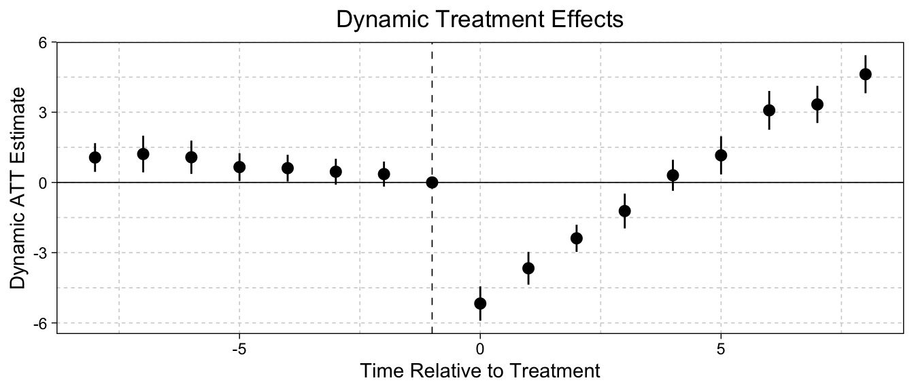

install.packages('fixest')
install.packages('ggfixest')twfe (fixest)
(R + python) non-staggered, absorbing, binary treatment
The two-way fixed effects (TWFE) estimator is the standard estimator used for DiD.
\[ Y_{it} = \underbrace{\hat\alpha_i + \hat\delta_t}_\text{fixed effects} + D_{it}\hat\tau + \mathbf X_{it}^\top\hat{\b\beta} + \hat\eps_{it} \]
Unit fixed effects \(\alpha_i\) account for between-unit differences, and time fixed effects \(\delta_t\) account for between-period differences. Thus, the only remaining confounders are varying-trends over time between units, which are assumed to not be present due to the parallel trends assumption.
For repeated cross-section analysis, we use group-fixed effects, where group is the level of treatment assignment. This requires parallel trends at the group level and stable group composition between periods.
TWFE can be biased if there is staggered treatment or non-absorbing treatment (see bacondecomp).
We will need the fixest package and ggfixest package. Documentation can be found here.
If you have not previously installed the packages, you can do so as follows:
Always remember to load the package before starting:
library(fixest)
library(ggfixest)We will need the pyfixest package. Documentation can be found here.
If you have not previously installed the packages, you should input the following code into the terminal:
python -m pip install pyfixestAlways remember to load the package before starting:
import pyfixest as pfTo estimate the ATT, we run a twfe regression model.
We use the feols() function to run the TWFE model.
mod = feols(
fml = outcome ~ treat + covar | id + time, # covariate is optional
data = df, # your data
vcov = ~ id # cluster SE by unit
)
mod |> summary()#> OLS estimation, Dep. Var.: outcome
#> Observations: 950
#> Fixed-effects: id: 95, time: 10
#> Standard-errors: Clustered (id)
#> Estimate Std. Error t value Pr(>|t|)
#> treat -3.68310 0.361071 -10.2005 < 2.2e-16 ***
#> covar 1.01833 0.032416 31.4142 < 2.2e-16 ***
#> ---
#> Signif. codes: 0 '***' 0.001 '**' 0.01 '*' 0.05 '.' 0.1 ' ' 1
#> RMSE: 1.60906 Adj. R2: 0.691054
#> Within R2: 0.623425The coefficient of treat is our estimate of the ATT - the causal effect of treatment on those who receive the treatment. The significance is given by Pr(>|t|) (the p-value) and the stars *** .
We can use the pf.feols() function to run the TWFE model:
mod = pf.feols(
fml = "outcome ~ treat + covar | id + time",
data = df,
vcov = {"CRV1": "id"}
)
mod.summary()#> ###
#>
#> Estimation: OLS
#> Dep. var.: outcome, Fixed effects: id+time
#> Inference: CRV1
#> Observations: 950
#>
#> | Coefficient | Estimate | Std. Error | t value | Pr(>|t|) | 2.5% | 97.5% |
#> |:--------------|-----------:|-------------:|----------:|-----------:|-------:|--------:|
#> | treat | -3.683 | 0.361 | -10.200 | 0.000 | -4.400 | -2.966 |
#> | covar | 1.018 | 0.032 | 31.414 | 0.000 | 0.954 | 1.083 |
#> ---
#> RMSE: 1.609 R2: 0.725 R2 Within: 0.623The coefficient of treat is our estimate of the ATT - the causal effect of treatment on those who receive the treatment. The significance is given by Pr(>|t|) (the p-value) and the stars *** .
Our dataset df should be a panel or repeated cross-section, and have the following variables:
| Variable | Description |
|---|---|
id |
A variable indicating the units/individual an observation belongs to in our data.* |
time |
A variable indicating time-periods in our study for each observation. |
outcome |
Outcome variable for each observation. |
treat |
Treatment variable for each observation. Should equal 1 for treated units and 0 for untreated units. |
covar |
(optional) covariate(s) to condition for parallel trends. |
*For repeated cross-section, the id variable should be instead the group/level of which treatment is assigned. For example, if treatment is assigned by county/state, use that as the id variable.
We can also estimate event-study dynamic effects for pre and post-treatment periods.
We use the feols() function to run the TWFE event study.
mod = feols(
fml = outcome ~ i(rel.time, group, ref = -1) + covar | id + time, # group = treat/never-treat
data = df, # your data
vcov = ~ id # cluster SE by unit
)We can plot these results. The ggiplot() function produces a ggplot2 figure, so any ggplot2 options can be added with a +, including themes, labels, etc.
mod |> ggiplot(
xlab = "Time Relative to Treatment", # x-axis label
ylab = "Dynamic ATT Estimate", # y-axis label
main = "Dynamic Treatment Effects", # title for plot
) +
xlim(-8, 8) # select how many periods to display
We can use the pf.feols() function to run the TWFE model:
mod = pf.feols(
fml = "outcome ~ i(rel_time, group, ref = -1) + covar | id + time",
data = df,
vcov = {"CRV1": "id"}
)We can plot these results with the .iplot() function. The labelling is quite messy, so it is useful to rename the labels.
mod.iplot(
# required arguments
coord_flip = False,
yintercept = 0,
#optional aesthetic arguments
figsize = (800, 350),
rename_models = {mod._model_name_plot: "TWFE"},
rotate_xticks = 90,
labels = {
'C(rel_time, contr.treatment(base=-1))[-9]': "-9",
'C(rel_time, contr.treatment(base=-1))[-8]': "-8",
'C(rel_time, contr.treatment(base=-1))[-7]': "-7",
'C(rel_time, contr.treatment(base=-1))[-6]': "-6",
'C(rel_time, contr.treatment(base=-1))[-5]': "-5",
'C(rel_time, contr.treatment(base=-1))[-4]': "-4",
'C(rel_time, contr.treatment(base=-1))[-3]': "-3",
'C(rel_time, contr.treatment(base=-1))[-2]': "-2",
'C(rel_time, contr.treatment(base=-1))[0]': "0",
'C(rel_time, contr.treatment(base=-1))[1]': "1",
'C(rel_time, contr.treatment(base=-1))[2]': "2",
'C(rel_time, contr.treatment(base=-1))[3]': "3",
'C(rel_time, contr.treatment(base=-1))[4]': "4",
'C(rel_time, contr.treatment(base=-1))[5]': "5",
'C(rel_time, contr.treatment(base=-1))[6]': "6",
'C(rel_time, contr.treatment(base=-1))[7]': "7",
'C(rel_time, contr.treatment(base=-1))[8]': "8",
'group': ""
}
)Note: there is no plotting of the pre-treatment -1 period. You may be better off manually plotting.
Our dataset df should be a panel or repeated cross-section, and have the following variables:
| Variable | Description |
|---|---|
id |
A variable indicating the units/individual an observation belongs to in our data.* |
time |
A variable indicating time-periods in our study for each observation. |
outcome |
Outcome variable for each observation. |
group |
Variable specifying if a unit is part of the treatment group or never-treated (control group). For units never receiving treatment, they get value 0, and for units that do end up receiving treatment sometime within the study, they get value 1. |
rel.time |
A relative time variable that indicates for the given period \(t\) of an observation, how many time-periods away did the unit \(i\) first get the treatment. For the never-treated observations, set the value to a very large or small number (-1000 is a common choice). |
covar |
(optional) covariate(s) to condition for parallel trends. |
*For repeated cross-section, the id variable should be instead the group/level of which treatment is assigned. For example, if treatment is assigned by county/state, use that as the id variable.